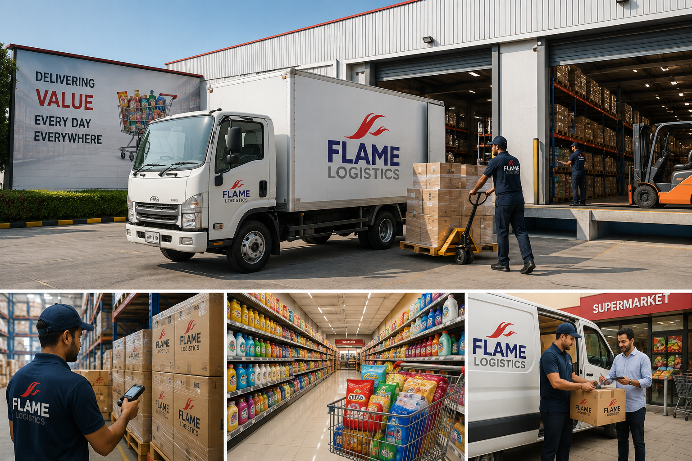
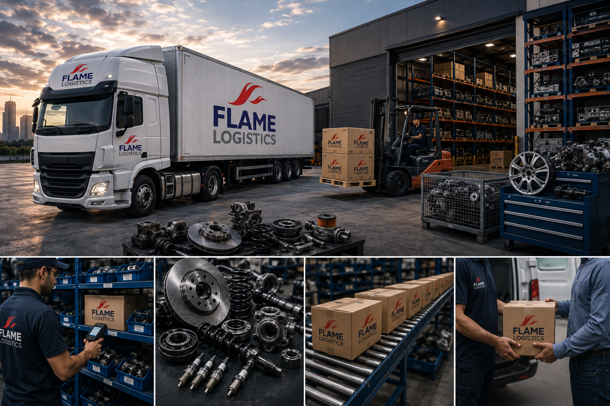
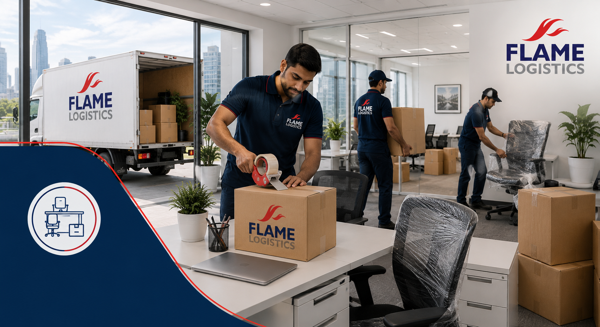

Logistics, Freight Forwarding & Port Operations
Seamless coordination across sea, air, and land freight with direct access to the Kingdom's major ports-customs clearance, container handling, and multimodal transport managed under one roof.
-
check_circle
Multimodal Freight Network
Sea, air, and land freight coordinated through a single point of contact for door-to-door delivery.
-
check_circle
Customs & Documentation
In-house customs brokerage ensures fast clearance and full regulatory compliance at every GCC port.
Port Coverage
12+ GCC Ports Served
Energy, Oil & Gas
Mission-critical logistics for upstream, midstream, and downstream energy operations, engineered to meet the safety and precision demands of the Kingdom's energy sector.
verified Hazmat & Compliance
Certified handling of hazardous materials and oilfield equipment under strict HSE protocols.
near_me Remote Site Delivery
Reliable transport to offshore platforms and remote drilling sites across the Eastern Province.

Industrial & Heavy Manufacturing
Specialized crating, rigging, and heavy-haul transport for industrial machinery and manufacturing equipment, protecting high-value assets from factory floor to final installation.
-
check_circle
Custom Crating & Rigging
Engineered wooden and steel crating built to protect oversized machinery in transit.
-
check_circle
Heavy-Lift Fleet
Flatbeds, low-loaders, and cranes for equipment exceeding standard freight dimensions.
Equipment Handled
Up to 80-Ton Loads
Construction & Infrastructure
Navigating the complex demands of Saudi Vision 2030 giga-projects requires more than just transport-it requires orchestrated precision for oversized loads and time-sensitive materials.
open_in_full Oversized Cargo Handling
Specialized permits and route planning for abnormal loads on major infrastructure corridors.
schedule Site-Ready Delivery
Just-in-time scheduling that keeps construction sites moving without costly downtime.

FMCG & Retail Distribution
High-velocity distribution networks built for the GCC's fast-moving consumer goods and retail sector, keeping shelves stocked from distribution center to storefront.
-
check_circle
Rapid Replenishment
Scheduled and on-demand delivery cycles that match retail demand patterns.
-
check_circle
Inventory Visibility
Real-time tracking across warehousing and last-mile distribution.
Delivery Cadence
Same-Day & Scheduled Runs
Automotive & Spare Parts
Just-in-time logistics for vehicle manufacturers, dealerships, and spare parts distributors, keeping production lines and showrooms running without delay.
bolt JIT Parts Delivery
Synchronized delivery windows that support lean manufacturing schedules.
directions_car Vehicle Transport
Secure car-carrier fleet for dealership and showroom distribution.


Corporate & Commercial Relocations
Full-service office and commercial relocation management, minimizing business downtime with meticulous planning, packing, and same-day setup.
-
check_circle
Turnkey Move Management
Dedicated project managers coordinate every phase from packing to final placement.
-
check_circle
After-Hours Scheduling
Relocations planned around business hours to avoid operational disruption.
Business Downtime
Zero-Disruption Moves
Technology, Electronics & Telecom
Advanced handling protocols for sensitive electronics, telecom infrastructure, and IT equipment, ensuring safe transit for the GCC's growing technology sector.
memory ESD-Safe Handling
Anti-static packaging and controlled environments protect sensitive components.
lock Secure Chain of Custody
Tracked, tamper-evident handling for high-value telecom and IT assets.

Agriculture & Food Supplies
Temperature-controlled logistics safeguarding agricultural produce and food supplies from farm and port to distribution center, preserving freshness at every stage.
-
check_circle
End-to-End Cold Chain
Real-time temperature monitoring and tracking for every shipment.
-
check_circle
Perishable Handling Expertise
Specialized vehicles and rapid transit for time-sensitive produce.
Current Fleet Temp Range
-18°C to +8°C Guaranteed